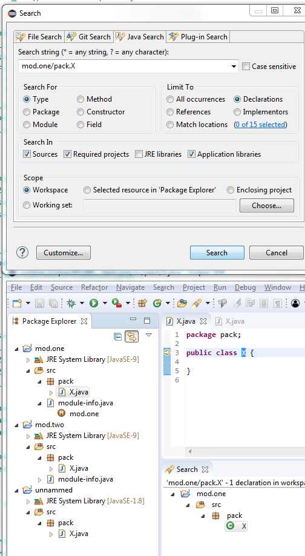
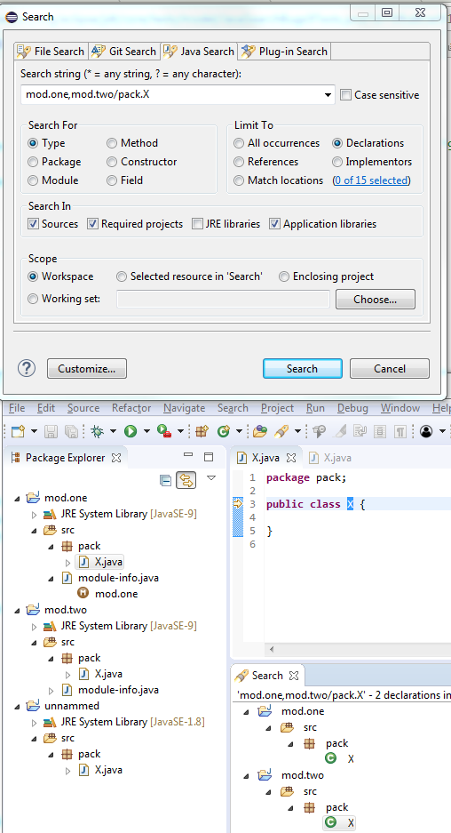
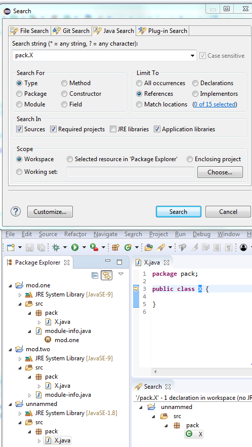

Instructions
The title should be short and snappy, written in sentence case, and using "headlinese" (compressed style). The title should not use trailing punctuation, and the <tr> XHTML element needs a unique id attribute (value is all-lowercase and hyphen-separated).
In the news description, tell users about changes they'll see in the UI. Tell component writers about changes they'll see at the client- and server-side APIs. Try to generate some excitement; save the boring details for the manual; be short and don't repeat yourself. The description should be complete sentences, with trailing punctuation.
Make the entry self-contained and mention API classes. Do not link to bugs and don't promote individuals or third-party products.
Use active voice (say "you", not "the user"), and follow other advice in the Topic Content section of the Eclipse Doc Style Guidelines.
Stick to the default font and size. Make command names (Quick Fix),
keyboard shortcuts (Ctrl+1), and preference page paths
(Preferences > General > Keys) bold (using <b>).
Avoid other emphasis markup, but prefer <b>
over <em> if you have to use one.
Do not enclose the first paragraph of an item in <p></p> tags.
Later in the entry, prefer <p> over <br/>.
To break up very long <code> tags that don't contain whitespace for automatic word-wrap,
consider inserting <span style="visibility:hidden">­</span> at strategic positions.
See entries in published news documents for correct examples. These published news entries have been already reviewed, while entries in the evolving document may still contain errors.
The Windows Snipping Tool actually saves to PNG on Windows 7 and can easily be used to crop and save screenshots:
- Arrange the windows for the shot
- Use the Windows Snipping Tool to capture part of the screen
- Use File > Save As to save the screenshot as a PNG
- Overlays such as red circles or boxes to call out details can be done using Microsoft Paint
Name the file in a way that is appropriate and specific to the item (e.g., key-bindings.png, rather than something generic like image.png). Use all lowercase letters in the image file name, including the ".png" file extension. As a separator, use hyphen "-" rather than underscore, space, or whatnot. The item's id is often a good choice for an image name.
Put all the images in a sibling directory named "images".
This gives XHTML like:
<img src="images/foo-view.png" alt=""/>
Include a suitable alt attribute.
The alt text should be empty ("") if the image just illustrates the text.
Only use the alt text to add information that is not accessible if the page is rendered without images.
Don't write alt="Screenshot of the XY dialog".
Blind users shouldn't have to skip useless repetitions, but e.g. a field label can be
interesting unless it's already part of the description.
If the alt attribute text cannot sufficiently replace the image contents
(e.g. for a screenshot that shows source code), then enclose the img element in a link
to a plain ".txt" file with the same name as the image:
<a href="images/foo-view.txt"><img ...
The images should be left-justified (as opposed to centered). Do not embed the width and height of the image.

Job names for Worker thread names. Previously all
running Worker's got enumerated thread names, without any hint what the
current Worker is actually doing:

Job name is added
next to the Worker name:

case or default
keywords to quickly navigate to the beginning of the switch statement.

moduleName/[qualification '.']typeName as shown:

Alternatively, a set of comma separated modules can be specified as moduleName1, moduleName2/[qualification '.']typeName as shown:

You can even search for types in unnammed modules specifically by either specifying ALL-UNNAMED in the module name as ALL-UNNAMED/packageName.typeName or
by just omitting the module name as /packageName.typeName as shown below:

Technically speaking, Java debugger automatically adds a new (user invisible) breakpoint in the JVM and notifies clients (like Debug view) on a breakpoint hit. If this behavior is undesired for some reason, product owners can disable it via product customization.
The property value is:
org.eclipse.jdt.debug.ui/org.eclipse.jdt.debug.ui.javaDebug.ListenOnThreadNameChanges=false

Test source folders and dependencies are shown with a darker icon in the build path settings, the package explorer and other locations. This can be disabled in Preferences > Java > Appearance.

Referenced projects can contain test sources and have test dependencies themselves. Usually, when test sources are
compiled, the test code in projects on the build path will be visible. As this is not always desirable, it can be
changed by setting the new build path attribute Without test code, that is available for projects, to Yes.
Build path entries configured like this have a decoration [without test code] after the project name, which can be disabled in Preferences > General > Appearance > Label Decorations.

For each project, compilation is now done in two phases: First all main sources (which cannot see any test-code on the build-path) and then all test sources.

As a consequence, if the project is a modular Java 9 project, test dependencies like JUnit can not be referenced in
the module-info.java, as they will not be visible while compiling it.
The solution used to handle this is the same, that Maven uses: When test dependencies are put on the classpath, the module being compiled will automatically be configured to read the unnamed module during the compilation of the test sources, so the test dependencies will be visible.
Of course, code completion will not suggest test code in main sources:


There are now two dynamic Java working sets Java Main Sources and Java Test Sources containing the source folders grouped according to value of the Contains test sources attribute. This can for example be used to remove warnings in test sources from the problems view:

To achieve this, create a new filter that shows warnings for the Java Main Sources working set and select it with the All Errors on Workspace filter:

There are also dedicated filters to quickly remove hits in main code or test code from Java search results:

Similar, there is a filter to remove test code from Call hierarchies:

Another filter to remove test code exists for Quick type hierarchies:

Finally, test source folders will be preselected in the New Junit Test Case-Wizard


Similar, when an exception breakpoint is hit, the exception being thrown is shown.


A code mining represents a content (ex: label, icons) that should be shown along with source text, like the number of references, a way to run tests (with run/debug icons), etc. The main goal of code mining is to help developer to understand more the written/writing code
A code mining is represented byorg.eclipse.jface.text.codemining.ICodeMining which are provided by org.eclipse.jface.text.codemining.ICodeMiningProvider
The org.eclipse.jface.text.source.ISourceViewerExtension5 provides the capability to register org.eclipse.jface.text.codemining.ICodeMiningProvider and update code minings.
The example CodeMiningDemo draws classes references / implementations code minings:

org.eclipse.jface.text.codemining.ICodeMiningProvider in text editor using ISourceViewerExtension5.
Associating providers via this extension doesn't automatically enable code-mining, so that clients are also supposed to use a reconciler or whatever event mechanism to invoke ISourceViewerExtension5.updateCodeMinings().
For instance you can consume the org.eclipse.jface.text.codemining.CodeMiningReconciler to update the registered CodeMining providers.
The GenericEditor Example display number of referenced projects:

This sample consumes the code mining provider ProjectReferencesCodeMiningProvider
which is registered with the org.eclipse.ui.workbench.texteditor.codeMiningProviders extension point:
<extension
point="org.eclipse.ui.workbench.texteditor.codeMiningProviders">
<codeMiningProvider
class="org.eclipse.ui.genericeditor.examples.dotproject.codemining.ProjectReferencesCodeMiningProvider"
id="org.eclipse.ui.genericeditor.examples.dotproject.codemining.references"
label="Project references">
<enabledWhen>
<with variable="editorInput">
<adapt type="org.eclipse.core.resources.IFile">
<test property="org.eclipse.core.resources.contentTypeId" value="org.eclipse.ui.genericeditor.examples.dotproject" />
</adapt>
</with>
</enabledWhen>
</codeMiningProvider>
</extension>
This code mining provider is updated with the org.eclipse.jface.text.codemining.CodeMiningReconciler reconciler.
<extension
point="org.eclipse.ui.genericeditor.reconcilers">
<reconciler
class="org.eclipse.jface.text.codemining.CodeMiningReconciler"
contentType="org.eclipse.ui.genericeditor.examples.dotproject">
</reconciler>
</extension>
org.eclipse.debug.core.launchConfigurationTypes extension point:
<extension
point="org.eclipse.debug.core.launchConfigurationTypes">
<launchConfigurationType
allowPrototypes="true"
delegate="org.eclipse.jdt.launching.sourcelookup.advanced.AdvancedJavaLaunchDelegate"
delegateDescription="%localJavaApplicationDelegate.description"
delegateName="%eclipseJDTLauncher.name"
id="org.eclipse.jdt.launching.localJavaApplication"
migrationDelegate="org.eclipse.jdt.internal.launching.JavaMigrationDelegate"
modes="run, debug"
name="%localJavaApplication"
sourceLocatorId="org.eclipse.jdt.launching.sourceLocator.JavaSourceLookupDirector"
sourcePathComputerId="org.eclipse.jdt.launching.sourceLookup.javaSourcePathComputer">
</launchConfigurationType>
</extension>
and also implement org.eclipse.debug.ui.AbstractLaunchConfigurationTab.initializeAttributes() for their specifics tabs.
StyledText#getOffsetAtPoint(Point) is a replacement for
StyledText#getOffsetAtLocation(Point). It behaves similar, except that it does
not throw an IllegalArgumentException when no character is at the given location,
but returns -1 instead.
Using the new method will result in better performance when used in tight loops. Especially the Show Whitespace editor feature benefits from using the new API.